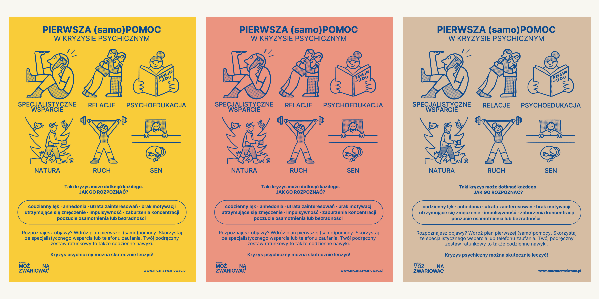
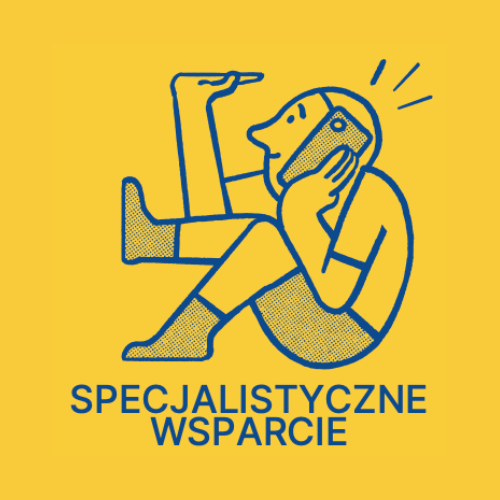
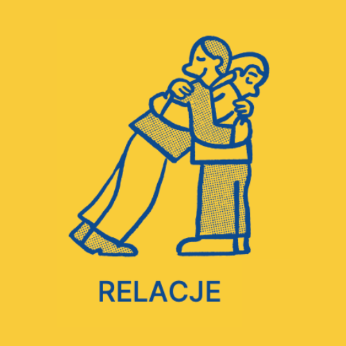
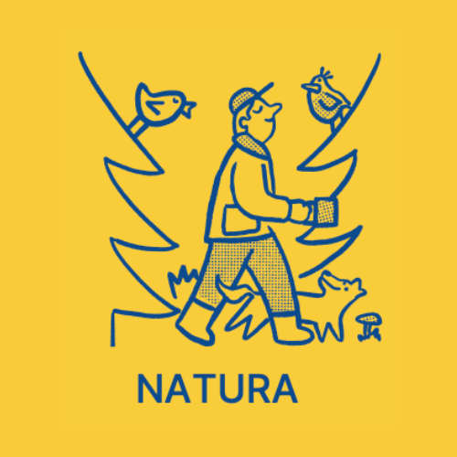
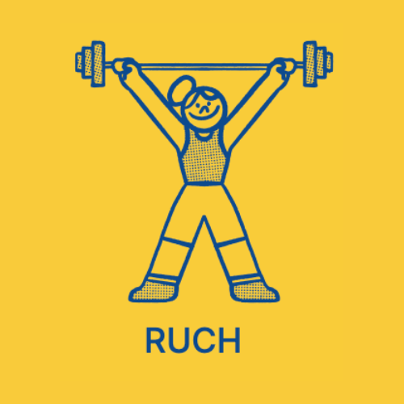
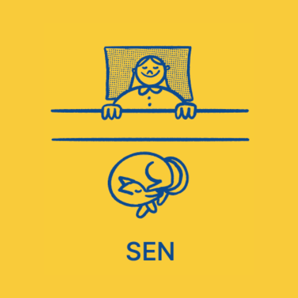
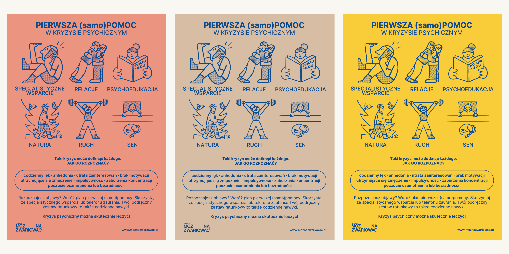

PIERWSZA (samo)POMOC
W KRYZYSIE PSYCHICZNYM
Z okazji Światowego Dnia Zdrowia Psychicznego Fundacja Można Zwariować rozpoczęła kampanię społeczną zachęcającą do reagowania na pogorszenie kondycji psychicznej. Akcja ma na celu upowszechnienie wiedzy o tym, jak udzielać sobie wsparcia w trudnym momencie – zarówno profilaktycznie, jak i w sytuacji kryzysu. Kryzys psychiczny może spotkać każdego, dlatego warto wiedzieć, jak reagować i jakie działania pomagają wracać do równowagi.

Plakat przygotowany w ramach kampanii prezentuje sześć filarów pierwszej (samo)pomocy: kontakt ze specjalistą, relacje z innymi, psychoedukację, kontakt z naturą, aktywność fizyczną oraz odpowiednią ilość snu i odpoczynku. Działania te, jak wskazują badania Światowej Organizacji Zdrowia (WHO, 2021–2022), realnie wspierają dobrostan psychiczny i stanowią skuteczną formę profilaktyki kryzysu. Kampania inspirowana jest zasadami pierwszej pomocy przedmedycznej – z tą różnicą, że dotyczy zdrowia psychicznego i ma przypominać, że pomoc często możemy zacząć od siebie samych.

SPECJALISTYCZNE WSPARCIE
Rozmowa ze specjalistą – psychologiem, terapeutą lub interwentem kryzysowym daje poczucie bezpieczeństwa i realną pomoc tu i teraz, a psychoterapia wspiera długofalowo w zrozumieniu siebie i odzyskaniu równowagi.

RELACJE
Samotność szkodzi zdrowiu tak samo jak palenie czy stres. Bliskość z ludźmi wzmacnia mózg, odporność i dobrostan – to jeden z najważniejszych filarów zdrowia psychicznego.
PSYCHOEDUKACJA
Psychoedukacja pomaga lepiej rozumieć siebie i mechanizmy stojące za naszymi emocjami. To kluczowy element leczenia i profilaktyki zaburzeń psychicznych, wspierający zarówno osoby w kryzysie, jak i ich bliskich.

NATURA
Obcowanie z naturą obniża poziom stresu, poprawia nastrój i sen, a także pomaga wyciszyć układ nerwowy. Już krótki spacer na świeżym powietrzu działa terapeutycznie – to prosta forma regeneracji ciała i umysłu.

RUCH
Regularny ruch redukuje stres, poprawia nastrój i jakość snu. Aktywność fizyczna uwalnia endorfiny, wzmacnia poczucie sprawczości i pomaga odzyskać równowagę psychiczną. Nawet krótki spacer może być formą troski o siebie.

SEN
Sen to absolutna podstawa zdrowia psychicznego – pozwala mózgowi odpocząć, przetworzyć emocje i wzmocnić odporność na stres. Regularny, regenerujący sen poprawia nastrój, koncentrację i wspiera zdolność radzenia sobie z codziennymi wyzwaniami.
– To już kolejna kampania, w której zwracamy się bezpośrednio do
osób dorosłych, zmagających się z kryzysem. Poprzednio naszym celem
było zachęcanie do tego, by każdy mógł otwarcie mówić o swoim
zdrowiu psychicznym i bez obaw sięgać po pomoc.
Teraz chcemy powiedzieć – wykonaj ten pierwszy, najważniejszy
krok i skontaktuj się ze specjalistą, ale zadbaj o siebie także we
własnym zakresie, na miarę sił i możliwości, stopniowo wdrażając
nawyki, które będą służyć Twojemu zdrowiu i wychodzeniu z
kryzysu
– mówi Cleo Ćwiek, prezeska Fundacji Można Zwariować.
Za projekt plakatu odpowiada
Michał Loba. Autorką hasła i copy jest Jowita Remlingier, wolontariuszka
Fundacji.
